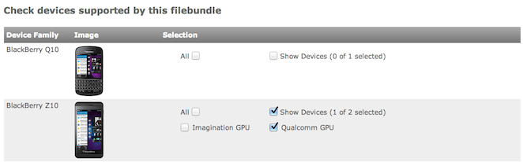

Blackberry10 FAQ
What GPU does the Z10 have?
There are four models of the Z10, one with a PowerVR GPU and three with an Adreno GPU. Note that these have different proprietary texture formats. (See below). The following table shows the models:
|Model |CPU |GPU |Nickname | |:---|:---| |STL100-1|TI OMAP 4470|PowerVR SGX 544|London| |STL100-2|Qualcomm Snapdragon S4 MSM8960|Adreno 225|Lisben| |STL100-3|Qualcomm Snapdragon S4 MSM8960|Adreno 225|Lisben| |STL100-4|Qualcomm Snapdragon S4 MSM8960|Adreno 225|Lisben|
Note that the CPU and GPU is written to the log that is created when the app runs on the device:
Renderer: Adreno (TM) 225
Vendor: Qualcomm
Note that you can determine the model number using System Settings->About on the device.

What is the differences between the two 'Build Types' available (Debug and Submission)?
The Debug build type uses BlackBerrys sandbox mode and is the best choice to be used during development. The file created is still protected and requires a debug token provided by you to run but is not signed like a submission bar. The sandbox environment allows for debugging such as accessing logs. Additionally you have expanded write access to the filesystem in this mode. When doing final QA testing a Submission build type should be used. This build actually signs and encrypts the bar which can then be installed on any device. With the exception of limited write access this mode is identical to Debug. Note: As long as you write your files to Application.persistentDataPath you will notice no differences for write access.
If I would like to use each chipsets proprietary textures (ATC and PVRTC) how do I do this but still install on all devices?
In order to use both ATC and PVRTC you will need to create two bar files - each targeting the different texture compression. Once you have the two bar files you will be given the option in App World to specifically select which devices each bar will be available on:

Is the simulator supported?
We have not tested Unity for Blackberry 10 on the simulator.
What can I do to extend battery life?
If you are not using the Gyroscope, consider turning it off using:
Input.gyro.enabled = false;
in your game start-up code.
How can I manually deploy the bar file to the device?
The bar file is the executable that the Unity build system creates for you. You can use build and run to build the bar, transfer to the device, and then launch it for you. If you do not want to use build and run from the editor, you can use build to make the bar only. To transfer the bar to the device you can use a command line tool called blackberry-deploy. This tool can be found in the ../PlaybackEngines/BB10Player/blackberry-tools/bin folder in your Unity installation. Use a command line such as:
./blackberry-deploy -installApp -package YourUnitySignedApp.bar -device IPaddress -password YourPassword
Note that on a PC you use the blackberry-deploy.bat batch file. Full details of this command line tool, and other tools available to you are provided by BlackBerry.
Does Unity Blackberry support Playbook?
No, Playbook cannot be targetted using this product. Blackberry were planning on releasing an OS10.1 for Playbook, at which point it would be compatible with Unity. This OS update has been abandoned, however.
How can I place my completed Unity project for sale on the BlackBerry marketplace?
Full instructions can be found here.